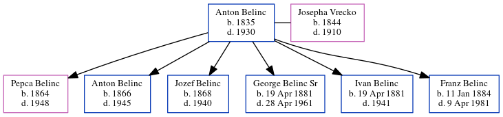

Anton Belinc 1835 - 1930
[ Home ] | [ Calendar ] | [ Surnames Index ] | [ Census Index ] | [ Family History ]Anton Belinc was born in Belo Kozje, Yugoslavia in 1835 and had 6 children with Josepha Maria Vrecko: Pepca, Anton, Jozef, George Anthony Sr, Ivan and Franz.
He died in Belo Kozje in 1930.
Children
- Pepca was born in 1864
- Anton was born in 1866
- Jozef was born in 1868
- George Anthony Sr was born on Apr 19, 1881
- Ivan was born on Apr 19, 1881
- Franz was born on Jan 11, 1884
Family Tree
Generated by ged2site. Last updated on Jun 6, 2024